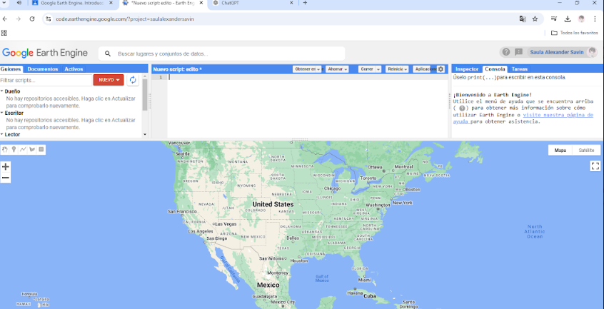

üîß Trabajos SIG
Proyecto Pucamon
Piedra, Papel o Tijeras
Tabla de Multiplicar

Gráfica de Correlación
Piedra, Papel o Tijeras V.2
Par o Impar
Colorear Pixeles
Proyecto Prompio
Tabla de Pixeles

Estube en la Secundaria 70, una escuela elegida por mis padres. Era un estudiante común, sin una dirección clara sobre mi futuro profesional. Sin embargo, mi pasión por la tecnología siempre estuvo presente. Inicialmente, me atraía la electrónica, soñando con crear y programar dispositivos innovadores. Durante mi etapa en la secundaria, mis padres eligieron mi escuela y yo era un estudiante normal. Sin embargo, siempre me ha gustado la tecnología. Aunque inicialmente quería estudiar electrónica, al momento de entrar al CETMAR descubrí los Sistemas de Información Geográfica (SIG) y quedé completamente fascinado. Elegí el CETMAR 11 porque siempre me ha atraído la tecnología, y cuando conocí los SIG, supe que había encontrado mi verdadera pasión. Aquí estoy, completamente comprometido con esta emocionante carrera..
Puedes conocer más de mi experiencia profesional en mi perfil de LinkedIn.
Ensenada, conocida como "La Cenicienta del Pacífico", es una ciudad costera rica en historia y diversidad geográfica. Ubicada en Baja California, ofrece un paisaje único que va desde sus famosos viñedos hasta sus extensas costas, pasando por montañas y valles. Su geografía diversa la convierte en un laboratorio natural perfecto para estudios geoespaciales.
El CETMAR 11 es una institución educativa líder en la formación técnica marina y geoespacial, ubicada en Ensenada, Baja California. Con un enfoque en la innovación tecnológica, ofrece programas especializados que preparan a los estudiantes para enfrentar los retos del siglo XXI, destacando especialmente en áreas como los Sistemas de Información Geográfica (SIG).
A continuación, te presentamos un video en el que podrás ver una vista aérea del CETMAR 11.
Formar técnicos altamente especializados en Sistemas de Información Geográfica, capaces de utilizar tecnologías de vanguardia para analizar, interpretar y gestionar información espacial, contribuyendo al desarrollo tecnológico y la comprensión de nuestro entorno geográfico.
https://cosfac.sems.gob.mx/Docentes/Programas_COSDAC/Programas-2016/Sistemas_de_Informacion_Geografica.pdf
El programa de estudio está estructurado en módulos que abarcan diversos aspectos esenciales para el desarrollo de habilidades en Sistemas de Información Geográfica. A continuación se presentan los módulos, basados en el Programa Oficial de SIG:
Ser un programa líder en la formación de profesionales en SIG, reconocidos por su innovación, capacidad de resolución de problemas y compromiso con la excelencia tecnológica y geoespacial.